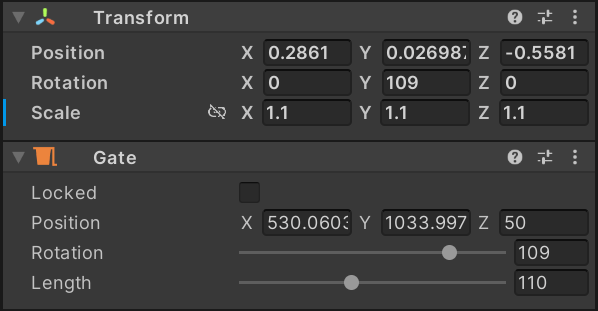
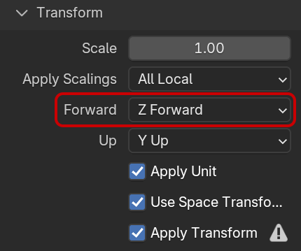

Units and 3D Space
Units describe how we measure things. For example, the units for measuring length are meters in the metric system, or feet and inches in the imperial system. There are also different systems for saving 3D data. For example, in VPX, the x-axis points to the right side of the player, the y-axis down, and the z-axis towards the player. We call this the orientation and handedness of the coordinate system.
Different software uses different units and orientations, and this section describes how VPE handles them. We'll also compare how VPX and VPE handle transformations.
Units
If you've already used VPX, you know that it uses its own units, defined by the ball size:
In VPX, 50 units correspond to the ball diameter.
A ball being 1¹⁄₁₆ inch, we get the following relations:
- 50 VP units = 1.0625"
- 1 VP unit = 0.02125" = 0.53975mm
or
- 1" = 47.05882352941176 VP units
- 1mm = 1.852709587772117 VP units
Obviously, no other 3D software uses these units, so importing models from, let's say, Blender, has always been a pain.
The problem is that if we wanted to just scale everything down to meters, it would impact physics because physics is strongly dependent on the real-world size (and thus, mass) of things. Given that VPE uses VPX's physics code, which has been fine-tuned with heuristics based on VPX units, we cannot simply scale everything to real-world units and expect the same behavior in the physics simulation.
So, we've chosen the following approach:
- Everything in the scene uses real-world units (meters).
- During runtime, 3D data is converted to VPX units for the physics simulation.
- New movement data from the physics engine is converted back and applied to real-world units.
Note
VPX Units in the Editor
Meters for elements on a pinball table which is under two meters long isn't necessarily the best unit either. The best would have been millimeters, but Unity's units aren't configurable.
Because of this and the fact that many table authors are still familiar with VPX units, VPE includes VPX units in the panel of each component. Updating one will automatically update the other.

Real world (top) and VPX (bottom) units in the editor
Orientation and Handedness
As mentioned at the beginning, the coordinate system of VPX is oriented with the Z-axis up and the origin at the top-left corner of the table. It's a left-handed coordinate system.
Blender, on the other hand (no pun intended), also has the Z-axis pointing up, but its Y-axis is pointing in the opposite direction, making it right-handed.
Unity's coordinate system is left-handed like VPX, but oriented differently. Since the player is usually looking forward, that's where the XY plane lies. So, Y points upwards, X to the right, and Z away from the player.
The main impact for you as a table author is that you need to pay attention when exporting your meshes from other 3D software. For example, when exporting to FBX in Blender, you need to make sure that the following mapping is set (the default Forward being -Z Forward):
- Forward -> Z-Forward
- Up -> Y-Up
Transformations
We call it a transformation when we move, rotate, or scale an object. Let's talk about how VPX and VPE handle transformations.
In VPX, the XY position within the playfield can be freely set for all items. For the Z-position, some objects allow free positioning, some can be parented to a surface (wall or ramp), and others have a fixed Z-position.
Regarding rotation, some items, like spinners or gates, can be Z-rotated, some can be freely rotated, and some can't be rotated at all.
Scaling support in VPX is more sparse, with most objects not being able to scale at all or only on a given axis.
Note
This is not to look down on VPX's transformation capabilities; they make sense in the vast majority of cases, but it's important to highlight them so we can understand how they differ from VPE.
For quite a while, VPE implemented the same restrictions as VPX, and we spent considerable time overriding Unity's transformation tools to adhere to those limitations.
However, as a user, you could always work around them, often accidentally, by either disabling gizmos in the editor or by simply parenting an item to another object and freely transforming the parent (the child always inherits transformation of its parent). If that happened, the result would be a rather incoherent mess because the visuals wouldn't correspond to the physics simulation, which was still bound by those limits.
So, we ended up implementing full transformation support for VPE. That means you can freely position, rotate, and scale all items. You can also parent items to other objects and transform those objects. Or the parents of those objects. In short, however the transformation hierarchy of your scene is, VPE will boil it down to one transformation during runtime, check for each item whether the physics engine supports the resulting transformation, and if not, apply the ball projection trick during a collision.
Runtime Transformations
In VPX, transformations are static. That means they cannot be changed during runtime. Obviously, a flipper rotates during runtime, but the object itself is fixed in place. Some games, however, require some form of movement. In VPX, that's worked around by creating multiple invisible collider objects that are then toggled depending on the position of the object.
That's, of course, very cumbersome and error-prone. In VPE, we've extended the physics engine to be able to mark objects are movable. If an object is marked as such, it can be fully transformed during gameplay, and the colliders are updated accordingly.
Note
Note that currently, moving objects don't have a velocity, meaning that hitting a moving object only takes into account the speed of the ball, not the object's. It's like the object is teleported frame by frame to its new position.
True collision where the object's directional and angular speed is calculated based off the last frame's position and the current one is a feature that is valuable and on the roadmap.